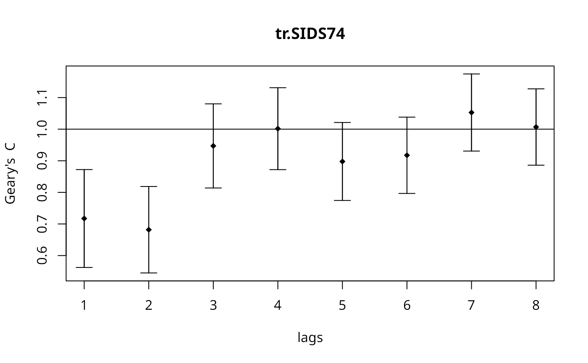
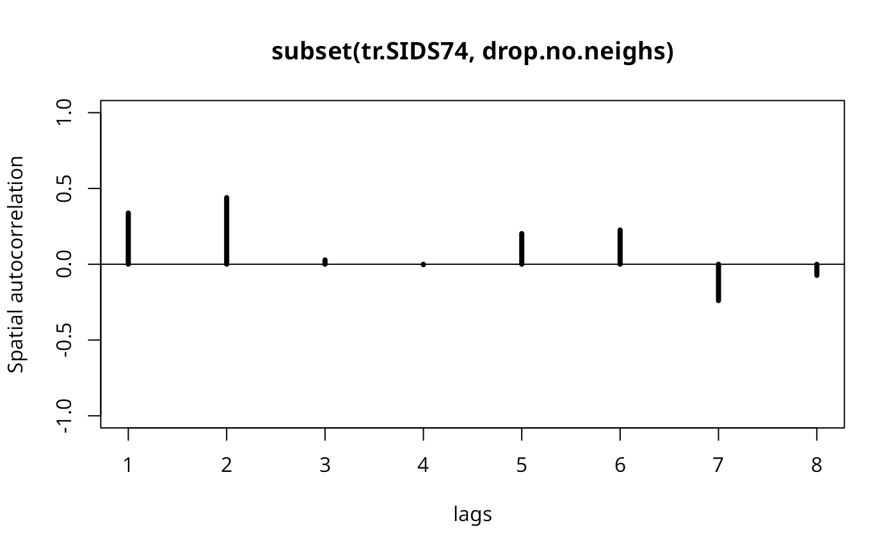
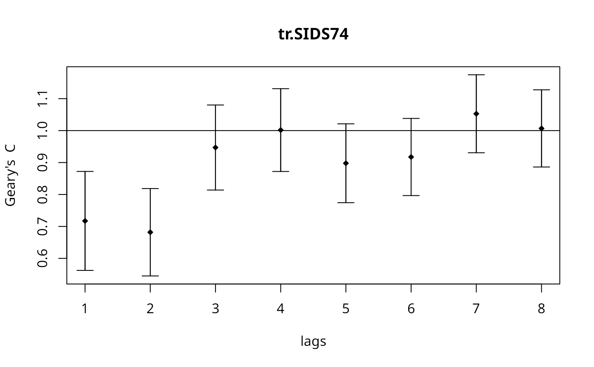
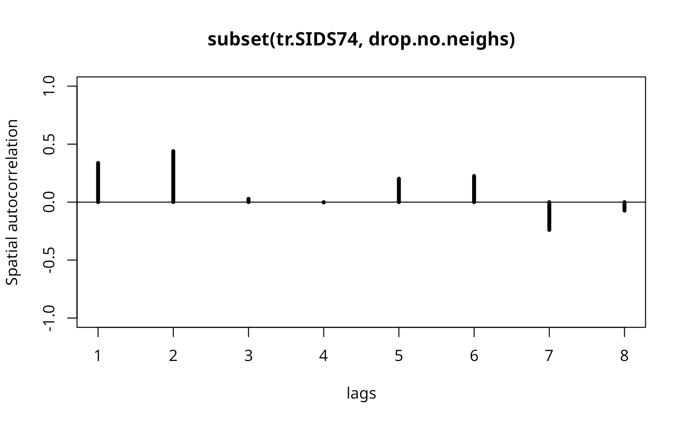

Spatial correlogram
sp.correlogram.RdSpatial correlograms for Moran's I and the autocorrelation coefficient, with print and plot helper functions.
Arguments
- neighbours
an object of class
nb- var
a numeric vector
- order
maximum lag order
- method
"corr" for correlation, "I" for Moran's I, "C" for Geary's C
- style
stylecan take values W, B, C, and S- randomisation
variance of I or C calculated under the assumption of randomisation, if FALSE normality
- zero.policy
default NULL, use global option value; if FALSE stop with error for any empty neighbour sets, if TRUE permit the weights list to be formed with zero-length weights vectors
- spChk
should the data vector names be checked against the spatial objects for identity integrity, TRUE, or FALSE, default NULL to use
get.spChkOption()- x
an object from
sp.correlogram()of classspcor- p.adj.method
correction method as in
p.adjust- main
an overall title for the plot
- ylab
a title for the y axis
- ylim
the y limits of the plot
- ...
further arguments passed through
Details
The print function also calculates the standard deviates of Moran's I or Geary's C and a two-sided probability value, optionally using p.adjust to correct by the nymber of lags. The plot function plots a bar from the estimated Moran's I, or Geary's C value to +/- twice the square root of its variance (in previous releases only once, not twice). The table includes the count of included observations in brackets after the lag order. Care needs to be shown when interpreting results for few remaining included observations as lag order increases.
Value
returns a list of class spcor:
- res
for "corr" a vector of values; for "I", a matrix of estimates of "I", expectations, and variances
- method
"I" or "corr"
- cardnos
list of tables of neighbour cardinalities for the lag orders used
- var
variable name
References
Cliff, A. D., Ord, J. K. 1981 Spatial processes, Pion, pp. 118–122, Martin, R. L., Oeppen, J. E. 1975 The identification of regional forecasting models using space-time correlation functions, Transactions of the Institute of British Geographers, 66, 95–118.
Author
Roger Bivand, Roger.Bivand@nhh.no
Examples
nc.sids <- st_read(system.file("shapes/sids.gpkg", package="spData")[1], quiet=TRUE)
rn <- as.character(nc.sids$FIPS)
ncCC89_nb <- read.gal(system.file("weights/ncCC89.gal", package="spData")[1],
region.id=rn)
#> Warning: neighbour object has 3 sub-graphs
ft.SID74 <- sqrt(1000)*(sqrt(nc.sids$SID74/nc.sids$BIR74) +
sqrt((nc.sids$SID74+1)/nc.sids$BIR74))
tr.SIDS74 <- ft.SID74*sqrt(nc.sids$BIR74)
cspc <- sp.correlogram(ncCC89_nb, tr.SIDS74, order=8, method="corr",
zero.policy=TRUE)
#> Warning: lag 1 neighbour object has 3 sub-graphs
#> Warning: lag 2 neighbour object has 3 sub-graphs
#> Warning: lag 3 neighbour object has 3 sub-graphs
#> Warning: lag 4 neighbour object has 3 sub-graphs
#> Warning: lag 5 neighbour object has 3 sub-graphs
#> Warning: lag 6 neighbour object has 3 sub-graphs
#> Warning: lag 7 neighbour object has 3 sub-graphs
#> Warning: lag 8 neighbour object has 3 sub-graphs
print(cspc)
#> Spatial correlogram for tr.SIDS74
#> method: Spatial autocorrelation
#> 1 2 3 4 5 6
#> 0.38193491 0.47679881 0.11740653 0.09935901 0.27819159 0.30153012
#> 7 8
#> -0.05150923 0.05283813
plot(cspc)
Ispc <- sp.correlogram(ncCC89_nb, tr.SIDS74, order=8, method="I",
zero.policy=TRUE)
#> Warning: lag 1 neighbour object has 3 sub-graphs
#> Warning: lag 2 neighbour object has 3 sub-graphs
#> Warning: lag 3 neighbour object has 3 sub-graphs
#> Warning: lag 4 neighbour object has 3 sub-graphs
#> Warning: lag 5 neighbour object has 3 sub-graphs
#> Warning: lag 6 neighbour object has 3 sub-graphs
#> Warning: lag 7 neighbour object has 3 sub-graphs
#> Warning: lag 8 neighbour object has 3 sub-graphs
print(Ispc)
#> Spatial correlogram for tr.SIDS74
#> method: Moran's I
#> estimate expectation variance standard deviate Pr(I) two sided
#> 1 (98) 0.2311685 -0.0103093 0.0055378 3.2450 0.0011747 **
#> 2 (98) 0.2246930 -0.0103093 0.0037817 3.8214 0.0001327 ***
#> 3 (98) 0.0193576 -0.0103093 0.0029386 0.5473 0.5841914
#> 4 (98) 0.0042255 -0.0103093 0.0024974 0.2908 0.7711687
#> 5 (98) 0.0875548 -0.0103093 0.0022875 2.0462 0.0407386 *
#> 6 (98) 0.0758362 -0.0103093 0.0021583 1.8543 0.0637011 .
#> 7 (98) -0.0752243 -0.0103093 0.0022282 -1.3752 0.1690654
#> 8 (98) -0.0261063 -0.0103093 0.0025211 -0.3146 0.7530514
#> ---
#> Signif. codes: 0 ‘***’ 0.001 ‘**’ 0.01 ‘*’ 0.05 ‘.’ 0.1 ‘ ’ 1
print(Ispc, "bonferroni")
#> Spatial correlogram for tr.SIDS74
#> method: Moran's I
#> estimate expectation variance standard deviate Pr(I) two sided
#> 1 (98) 0.2311685 -0.0103093 0.0055378 3.2450 0.009397 **
#> 2 (98) 0.2246930 -0.0103093 0.0037817 3.8214 0.001061 **
#> 3 (98) 0.0193576 -0.0103093 0.0029386 0.5473 1.000000
#> 4 (98) 0.0042255 -0.0103093 0.0024974 0.2908 1.000000
#> 5 (98) 0.0875548 -0.0103093 0.0022875 2.0462 0.325909
#> 6 (98) 0.0758362 -0.0103093 0.0021583 1.8543 0.509609
#> 7 (98) -0.0752243 -0.0103093 0.0022282 -1.3752 1.000000
#> 8 (98) -0.0261063 -0.0103093 0.0025211 -0.3146 1.000000
#> ---
#> Signif. codes: 0 ‘***’ 0.001 ‘**’ 0.01 ‘*’ 0.05 ‘.’ 0.1 ‘ ’ 1
plot(Ispc)
 Cspc <- sp.correlogram(ncCC89_nb, tr.SIDS74, order=8, method="C",
zero.policy=TRUE)
#> Warning: lag 1 neighbour object has 3 sub-graphs
#> Warning: lag 2 neighbour object has 3 sub-graphs
#> Warning: lag 3 neighbour object has 3 sub-graphs
#> Warning: lag 4 neighbour object has 3 sub-graphs
#> Warning: lag 5 neighbour object has 3 sub-graphs
#> Warning: lag 6 neighbour object has 3 sub-graphs
#> Warning: lag 7 neighbour object has 3 sub-graphs
#> Warning: lag 8 neighbour object has 3 sub-graphs
print(Cspc)
#> Spatial correlogram for tr.SIDS74
#> method: Geary's C
#> estimate expectation variance standard deviate Pr(I) two sided
#> 1 (98) 0.7172624 1.0000000 0.0059986 -3.6506 0.0002617 ***
#> 2 (98) 0.6817819 1.0000000 0.0046785 -4.6523 3.282e-06 ***
#> 3 (98) 0.9470179 1.0000000 0.0044311 -0.7959 0.4260762
#> 4 (98) 1.0016202 1.0000000 0.0041985 0.0250 0.9800516
#> 5 (98) 0.8977501 1.0000000 0.0038054 -1.6575 0.0974119 .
#> 6 (98) 0.9173310 1.0000000 0.0036428 -1.3697 0.1707819
#> 7 (98) 1.0527148 1.0000000 0.0037227 0.8640 0.3875979
#> 8 (98) 1.0067939 1.0000000 0.0036482 0.1125 0.9104415
#> ---
#> Signif. codes: 0 ‘***’ 0.001 ‘**’ 0.01 ‘*’ 0.05 ‘.’ 0.1 ‘ ’ 1
print(Cspc, "bonferroni")
#> Spatial correlogram for tr.SIDS74
#> method: Geary's C
#> estimate expectation variance standard deviate Pr(I) two sided
#> 1 (98) 0.7172624 1.0000000 0.0059986 -3.6506 0.002093 **
#> 2 (98) 0.6817819 1.0000000 0.0046785 -4.6523 2.626e-05 ***
#> 3 (98) 0.9470179 1.0000000 0.0044311 -0.7959 1.000000
#> 4 (98) 1.0016202 1.0000000 0.0041985 0.0250 1.000000
#> 5 (98) 0.8977501 1.0000000 0.0038054 -1.6575 0.779295
#> 6 (98) 0.9173310 1.0000000 0.0036428 -1.3697 1.000000
#> 7 (98) 1.0527148 1.0000000 0.0037227 0.8640 1.000000
#> 8 (98) 1.0067939 1.0000000 0.0036482 0.1125 1.000000
#> ---
#> Signif. codes: 0 ‘***’ 0.001 ‘**’ 0.01 ‘*’ 0.05 ‘.’ 0.1 ‘ ’ 1
plot(Cspc)

drop.no.neighs <- !(1:length(ncCC89_nb) %in% which(card(ncCC89_nb) == 0))
sub.ncCC89.nb <- subset(ncCC89_nb, drop.no.neighs)
plot(sp.correlogram(sub.ncCC89.nb, subset(tr.SIDS74, drop.no.neighs),
order=8, method="corr"))

Cspc <- sp.correlogram(ncCC89_nb, tr.SIDS74, order=8, method="C",
zero.policy=TRUE)
#> Warning: lag 1 neighbour object has 3 sub-graphs
#> Warning: lag 2 neighbour object has 3 sub-graphs
#> Warning: lag 3 neighbour object has 3 sub-graphs
#> Warning: lag 4 neighbour object has 3 sub-graphs
#> Warning: lag 5 neighbour object has 3 sub-graphs
#> Warning: lag 6 neighbour object has 3 sub-graphs
#> Warning: lag 7 neighbour object has 3 sub-graphs
#> Warning: lag 8 neighbour object has 3 sub-graphs
print(Cspc)
#> Spatial correlogram for tr.SIDS74
#> method: Geary's C
#> estimate expectation variance standard deviate Pr(I) two sided
#> 1 (98) 0.7172624 1.0000000 0.0059986 -3.6506 0.0002617 ***
#> 2 (98) 0.6817819 1.0000000 0.0046785 -4.6523 3.282e-06 ***
#> 3 (98) 0.9470179 1.0000000 0.0044311 -0.7959 0.4260762
#> 4 (98) 1.0016202 1.0000000 0.0041985 0.0250 0.9800516
#> 5 (98) 0.8977501 1.0000000 0.0038054 -1.6575 0.0974119 .
#> 6 (98) 0.9173310 1.0000000 0.0036428 -1.3697 0.1707819
#> 7 (98) 1.0527148 1.0000000 0.0037227 0.8640 0.3875979
#> 8 (98) 1.0067939 1.0000000 0.0036482 0.1125 0.9104415
#> ---
#> Signif. codes: 0 ‘***’ 0.001 ‘**’ 0.01 ‘*’ 0.05 ‘.’ 0.1 ‘ ’ 1
print(Cspc, "bonferroni")
#> Spatial correlogram for tr.SIDS74
#> method: Geary's C
#> estimate expectation variance standard deviate Pr(I) two sided
#> 1 (98) 0.7172624 1.0000000 0.0059986 -3.6506 0.002093 **
#> 2 (98) 0.6817819 1.0000000 0.0046785 -4.6523 2.626e-05 ***
#> 3 (98) 0.9470179 1.0000000 0.0044311 -0.7959 1.000000
#> 4 (98) 1.0016202 1.0000000 0.0041985 0.0250 1.000000
#> 5 (98) 0.8977501 1.0000000 0.0038054 -1.6575 0.779295
#> 6 (98) 0.9173310 1.0000000 0.0036428 -1.3697 1.000000
#> 7 (98) 1.0527148 1.0000000 0.0037227 0.8640 1.000000
#> 8 (98) 1.0067939 1.0000000 0.0036482 0.1125 1.000000
#> ---
#> Signif. codes: 0 ‘***’ 0.001 ‘**’ 0.01 ‘*’ 0.05 ‘.’ 0.1 ‘ ’ 1
plot(Cspc)

drop.no.neighs <- !(1:length(ncCC89_nb) %in% which(card(ncCC89_nb) == 0))
sub.ncCC89.nb <- subset(ncCC89_nb, drop.no.neighs)
plot(sp.correlogram(sub.ncCC89.nb, subset(tr.SIDS74, drop.no.neighs),
order=8, method="corr"))
